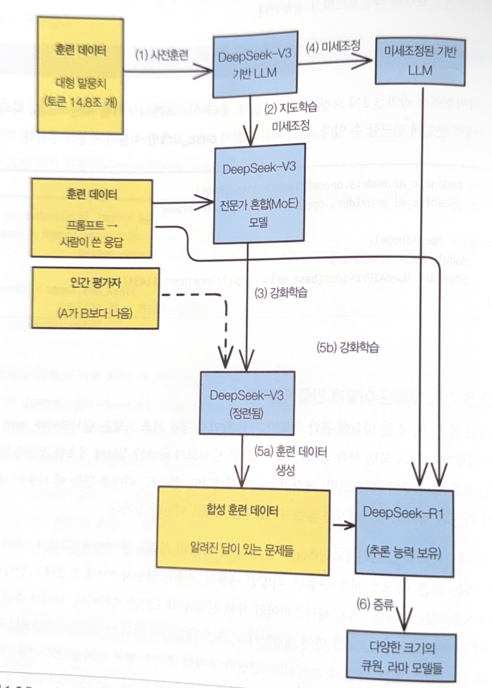
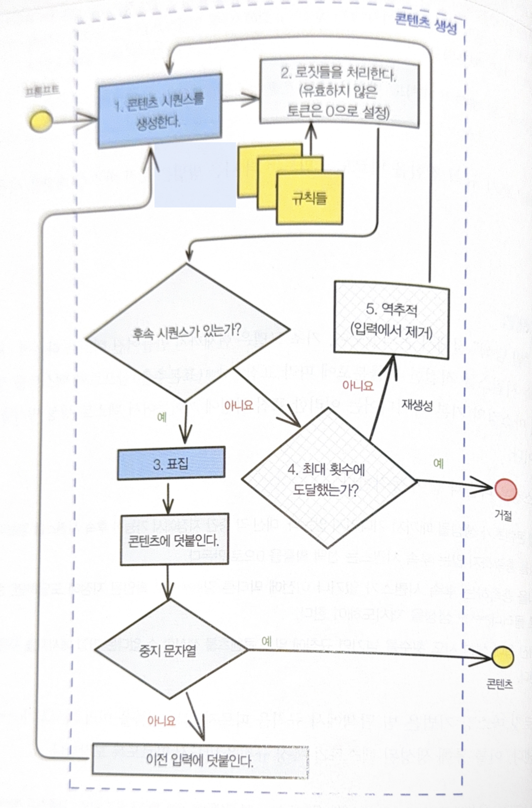
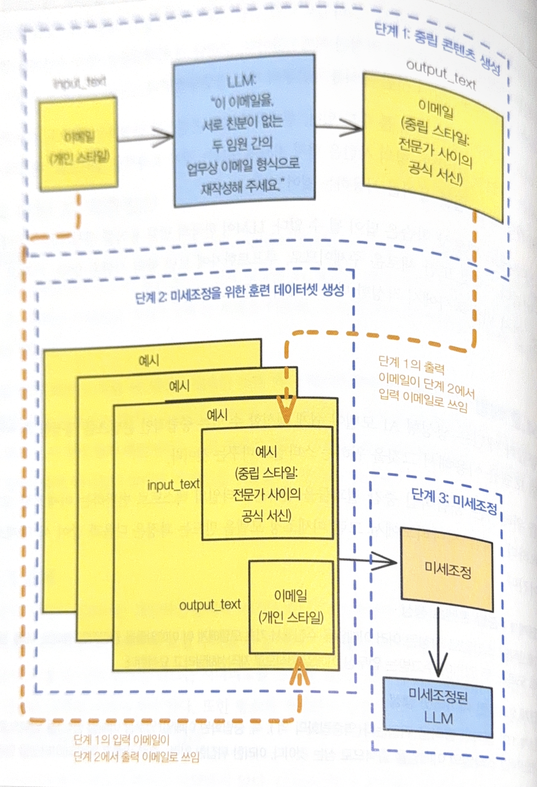

https://github.com/lakshmanok/generative-ai-design-patterns
AI Framework
-
LangChain
-
Pydantic AI : https://github.com/pydantic/pydantic-ai
FM
DeepSeek Case
- DeepSeek : https://github.com/deepseek-ai/DeepSeek-LLM
Process
-
사전훈련
-
방대한 토큰 데이터셋 사용 (14.8조 개)
-
다음 토큰 예측하도록 모델 훈련
-
-
SFT (Supervised Fine-Tuning, 지도학습 미세조정)
- 세심하게 선별한 데이터셋으로 훈련
-
MoE (Mixture of Experts, 전문가 혼합)
-
주어진 프롬프트에 대해 전문가들의 이상적 응답으로 모델 학습
-
모델의 방대한 매개변수 중 일부만 활성화하여 성능 향상
-
DeepSeek-V3 : 6710억개 매개변수 → 370억개 활성화
-
-
RLHF (Reinforcement Learning with Human Feedback, 선호도로 강화학습)
-
인간 평가자의 선호 판단 기반 모델 정교화
-
모델 결과물을 인간의 기대와 가치에 정렬
-
DeepSeek-V3 → DeepSeek-R1
How DeepSeek-R1 Was Built; For dummies
Learn how DeepSeek achieved OpenAI o1-level reasoning with pure RL and solved challenges through multi-stage training.
https://www.vellum.ai/blog/the-training-of-deepseek-r1-and-ways-to-use-it -
-
SFT 없이 Base 모델에 강화학습 직접 적용
-
복잡한 문제 해결에 CoT (Chain of Thought, 사고 연쇄) 추론 탐색
-
DeepSeek-R1-Zero 개발
-
-
Distill (증류)
-
DeepSeek-R1 기능을 수월하게 활용할 수 있도록 생성한 모델
-
원천 모델 추론 능력 상당 부분 유지 하면서 일상적 하드웨어에서 실행 가능
-
1.5B, 7B, 8B, 14B
-

모델 지형도
LLM Leaderboard - Best Text & Chat AI Models Compared
Compare and explore Text models ranked by overall performance.
https://arena.ai/leaderboard/text
모델 유형
Frontier Model
-
최전선 모델, 주력 모델
-
SOTA (State Of The Art) 능력으로 최고 겅능 제공
-
자원 소모가 크고 고 비용
-
모델이 크고 독점적
-
로컬 실행 어려움
-
Claude Opus, GPT o, Gemini Pro
Distilled Model
-
성능과 효율성의 균형을 맞춘 버전
-
더 낮은 비용과 빠른 응답 시간으로 합리적 성능 제공
-
고용량 애플리케이션에 적합
-
Claude sonnet, GPT mini, Gemini flash
Open-Weight Model
-
가중치 (신경망 매개변수) 공개 모델
-
자신의 용도에 맞게 최적화
-
Llama, Mistral, DeepSeek, Qwen, Falcon
-
호스팅 지원 서비스
Together AI | The AI Native Cloud
Build what’s next on the AI Native Cloud.
https://www.together.ai/
-
인터넷과 단절된 air-gapped 시스템에서 사용
- Google Distributed Cloud
Run Gemini and AI on-prem with Google Distributed Cloud | Google Cloud Blog
Gemini and Google Agentspace search will soon be available on Google Distributed Cloud (GDC), bringing AI to on-premises environments.
https://cloud.google.com/blog/products/ai-machine-learning/run-gemini-and-ai-on-prem-with-google-distributed-cloud- Azure on-prem
Unlocking new possibilities: Microsoft AI, database, and identity products receive authorization for Top Secret workloads - Azure Government
Additional products in Microsoft Azure for U.
https://devblogs.microsoft.com/azuregov/unlocking-new-possibilities/
Agent AI
Autonomy (자율성)
Agentic Behavior
-
목표 지향성
-
계획 및 추론
-
인지 및 행동
-
적응 및 학습
세밀한 제어
Logit
-
마지막 계층에서 ‘다음 단어‘ 예측
-
언어 모델의 마지막 계층이 출력하는 원시 수치
-
이 로짓을 정규화하여 각 토큰의 선택 확률 계산 : Softmax 함수 사용
표집 방법 (Sampling)
Greedy sampling (탐욕 표집)
- 항상 가장 가능성이 큰 단어만 선택
온도 (T)
-
소프트맥스 함수 적용전 로짓 값의 크기릉 조절
-
토큰 선택의 무작위성을 제어
-
초매개변수 (hyperparameter)
-
T : 0 → 탐욕 표집
-
T가 높아지면 가능성 낮은 ‘꼬리‘ 부분 단어 선택 → 창의성 높은 결과물
상위 K 표집 (Top-K)
-
어휘집에서 가장 가능성이 높은 토큰 k개만 선정
-
온도가 높을 때 엉뚱한 후속 단어 선정을 피할 수 있음
-
낮은 k 값은 흔히 볼 수 있는 결과 추출
상위 P 표집 (Top-P)
-
누적 확률이 임계값 p를 초과하는 토큰들의 최소 집합을 동적으로 선택
-
중핵 표집 (nucleus) : 확률 질량의 대부분을 차지하는 토큰들의 중핵
-
모델의 확산도에 따라 적응적으로 작동
-
확산도 높은 경우 적은 수 토큰 고려
-
확산도 낮은 경우 더 많은 토큰 고려
빔 탐색 (Beam Search)
-
결정론적 탐색
-
가능한 여러 후속 토큰 시퀀스들을 병렬로 탐색 후 확률이 가장 높은 토큰 시퀀스를 찾음
-
전체 시퀀스의 확률 고려
-
Penalty 부여하여 선택 확률 조절
-
반복 벌점
-
빈도(frequency), 출현(presence)
-
이미 나타난 토큰 재현 확률 제어
-
반복 루프 방지
-
-
길이 벌점
-
최소 길이, 최대 길이 : 생성 토큰 수 조절
-
길이 정규화 : 짧은 시퀀스 선호 편향 방지
-
-
빔 탐색 너비 제어
- 고려 하는 병렬 시퀀스 개수 제어
모델 학습
컨텍스트 내 학습
-
모델 가중치 변경 없이 프롬프트 변경하여 사용
-
예시나 지시사항 만으로 새로운 작업에 적응
-
Zero Shot Learning
-
Few Shot Learning
사후학습
-
사전 훈련된 모델을 새로운 작업이나 도메인에 맞게 커스텀화
-
모델의 가중치 수정
-
기존 모델과 다른 종단점으로 재배포
-
기초 모델의 모든 훈련 과정에 적용 가능 : 다음 단어 예측, SFT, RLHF
CPT (Continued Pretraing, 후속 사전훈련)
-
기초 모델 훈련에 사용하지 않은 어휘나 데이터셋으로 기반 모델 훈련 지속
-
거의 사용되지 않음
SFT (Supervised Fine Tuning, 지도학습 미세조정)
-
프롬프트, 응답 쌍으로구성된 데이터셋을 이용한 지도학습
-
지시시항 조정 (instruction tuning) 기법으로 모델 성능 향상
PeFT (Parameter efficient Fine Tuning, 매개변수 효율적 미세조정)
-
보통 LoRA (Low rank adaption, 저계수 적응) 기법 사용
-
사전 훈련된 원천 가중치를 동결하고 작고 훈련 가능한 어댑터 행렬을 추가
-
훈련 가능 매개변수 개수 획기적 감소, 메모리 요구량 낮음
-
QLoRA는 모델 모든 가중치를 양자화 : 훈련 느리지만 메모리 효율 높음
Preference Tuning (선호도 조정)
-
동일 프롬프트에 대해 다른 모델의 결과물을 비교하여 피드백 제공
-
DPO (Direct Preference Optimization, 직접 선호도 최적화) 이용 수행하거나
-
GRPO (Group Relative Policy Optimization) : 다수 응답 생성 후 그룹의 평균 보상으로 정규화 된 점수를 할당
응답 스타일 제어
Logit Masking
-
모델이 일련의 규칙에 따라 텍스트 생성
-
기초 모델 이용하는 클라이언트 애플리케이션에서 설정
-
브랜딩 : 모델과 연관된 브랜딩 단어를 사용하거나 사용하지 않음
-
정확성 : 미리 지정된 특정 위치의 값 검증
-
규정 준수 : 답변에서 포함되지 않아야 할 것 등을 지정
-
스타일북 사용
-
-
Anti Pattern : 될 때까지 재시도 (try-and-try-again)
-
Logit Masking : 기초 모델의 후속 시퀀스 표집 과정에 끼어들어 텍스트 생성 방식을 변조
-
각 중간 시점의 후속 시퀀스 얻은 후 규칙 미충족 시퀀스의 선택 확률을 0으로 설정
-
규칙 충족 후속 시퀀스 없거나, dead end (막다른 길) 확인시 뒤로 물러나 재시도
-
정해진 최대 생성 시도 회수 초과시 거절 메시지 전달
-
Beam 탐색에서 규칙 따르지 않는 빔들을 가지치기 (pruning)

- examples/01_logits_masking/0_logits_masking.ipynb
-
-
Sequnce 재생성
- examples/01_logits_masking/2_sequence_regeneration.ipynb
문법 패턴
-
생성 텍스트가 따르는 스타일의 규칙을 문맥 자유 메타구문 (context-free merasyntax) 으로 표현
-
프롬프트로 명시하고 예시를 제공하는 것 으로 부족한 경우 모델의 스타일 규칙을 일반화
-
일부 모델 프레임워크에서 후보 토큰들에 적용할 문법을 지정하는 옵션을 지원 → 허용되지 않는 토큰 확률을 0읋 만듬
-
examples/02_grammar
- 대부분의 데이터 포맷과 프로그래밍 언어에서 사용할 수 있는 BNF (Backus-Naur Form) 명세를 사용
스타일 전이 (Transfer)
-
로짓 마스킹이나 문법으로 미묘한 뉘앙스 표현이 어려운 경우
-
Few-shot Learning
- 입력-출력 예시들을 모델에 제공하여 콘텐츠 스타일 제어
-
Model Fine-tuning
-
입력-기대 출력 예시들로 모델을 다시 훈련
-
예제 : Image Style Transfer
-
역중립화 (Reverse Neutralization)
-
먼저 중립적인 형태의 결과물을 생성 후
- 개인화 입력 → 중립화 출력
-
원하는 스타일로 미세조정 된 모델로 결과물 후처리
- 중립화 출력을 입력으로 개인화 입력으루출력 쌍으로 하는 학습 데이터로 활용

-
중립 형태 선택
-
원본 텍스트와 중립 텍스트의 임베딩 코사인 유사도 확인
-
생성된 중립 콘텐츠의 주제 다양성 유지 확인
-